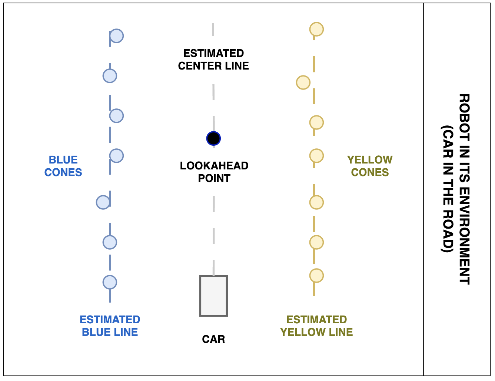

Autonomous Vehicle Navigation System
Control system for lane keeping, cruise control, and obstacle detection
Project Overview
Developed a modular control system for an autonomous vehicle to navigate closed circuits. The architecture integrated classical PID control with Reinforcement Learning (RL) to enhance performance in complex, noisy environments.
Impact
The system demonstrated a successful sim-to-real transition, overcoming challenges such as sensor noise and non-linear vehicle dynamics.
- Robust Navigation: Consistently completed laps on a closed circuit without lane departures.
- Efficiency: Residual RL integration optimized control parameters without exhaustive manual tuning.
- Reliability: Integrated obstacle detection allowed for safe emergency stops during high-speed testing.
System Integration & FSM
To incorporate every sub-system effort, I implemented a Finite State Machine (FSM) that prioritized safety and mission objectives.
- Detection State: Constantly monitors cone positions and obstacle distance using the integrated vision pipeline.
- Navigation State: Executes lane-keeping and cruise control policies when the path is clear.
- Evasive Maneuver State: Triggered by the object detection module to override standard navigation for collision avoidance.
- Emergency Stop: A fail-safe state that engages maximum braking if an obstacle is unavoidable.

Figure 1: FSM diagram
Core Engineering Modules
Lane Keeping & Curve Handling
Designed a steering policy using a baseline PID controller to follow road centerlines estimated from cone positions.

Figure 2: Representation of the Robot in its environment
Cruise Control
Developed an ESC control policy that maintains target velocity while dynamically slowing down during sharp curves to maintain traction.
Object Detection
Implemented systems to identify track obstacles and execute reactive maneuvers or emergency stops to prevent collisions.
What I Learned
This project provided deep insights into the practical challenges of robotic control systems:
- Hardware Constraints: Addressed how battery voltage drops affect integral control and speed consistency.
- Hybrid Architectures: Gained experience combining traditional PID stability with adaptive Reinforcement Learning.
- System Integration: Learned how to harmonize individual modules into a reliable, state-driven autonomous system.